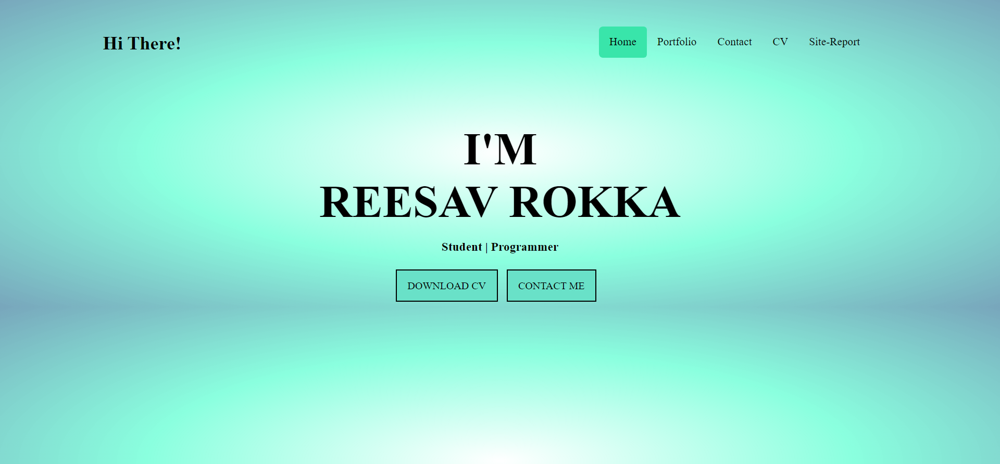
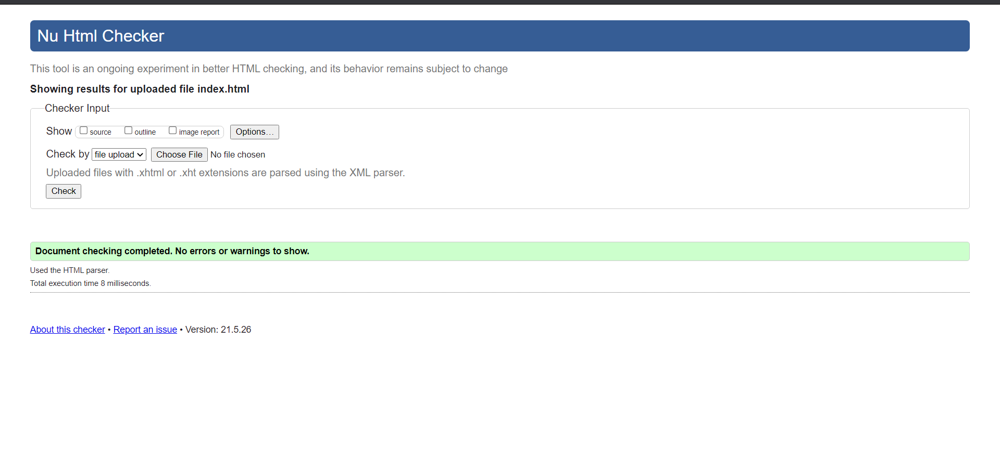
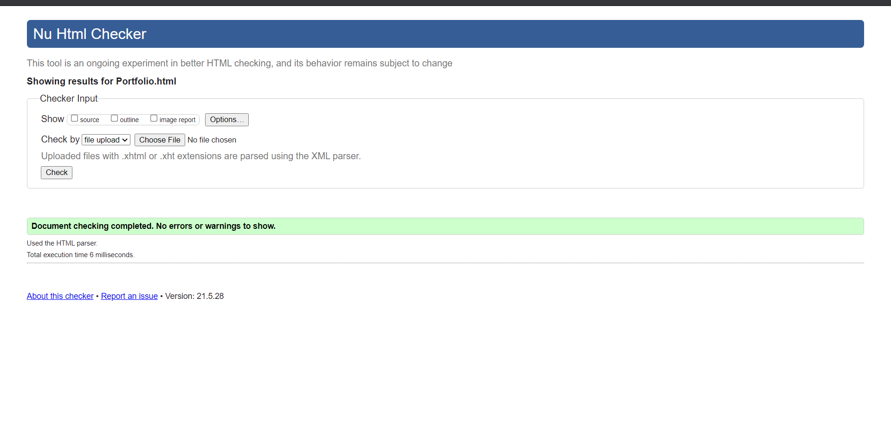

Objectives
The main purpose of my website is to display my own portfolio. My curriculum vitae, as well as my personal and professional endeavors, can be found here. My site illustrates proper HTML,CSS and GitHub usage as well as a complete understanding of how a small website works.
MyExperience
Because this is my first website, I've learnt a lot of new stuff. This new experience of designing websites aided me in different aspects of HTML and CSS, as well as how to properly use GitHub. It also taught me how to design each page's individual elements. I used to think that coding was not my cup of tea.
Design & UI Interface
When it comes to design and user interface, First, I figured out how my website should look by establishing a proper background where I worked with several photos until I finally settled on a color gradient. I also wondered how the finished website would look in both the responsive and non-responsive layouts.
GitHub Report
For a variety of reasons, my GitHub has undergone many adjustments. I've discussed a lot of significant changes in this article.

Validation & Debugging Process
I expected the debugging process to be more difficult, but with the assist of the validator, it was so simple that I was able to figure out any problem quickly, since it identifies where the fault is situated in the source pages' lines. In a short length of time, I could solve any issue.


References